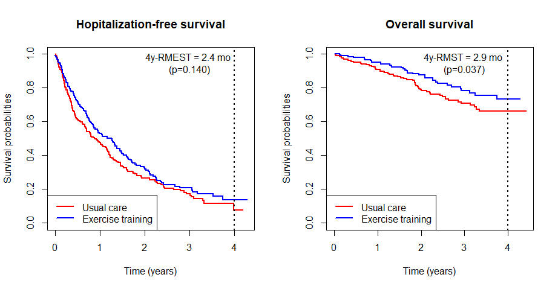
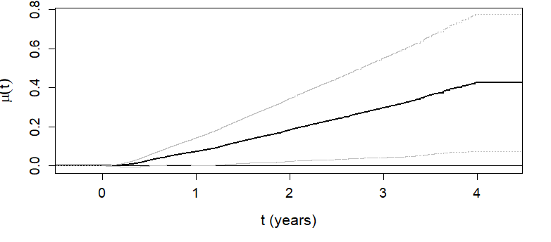
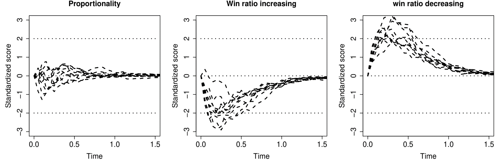
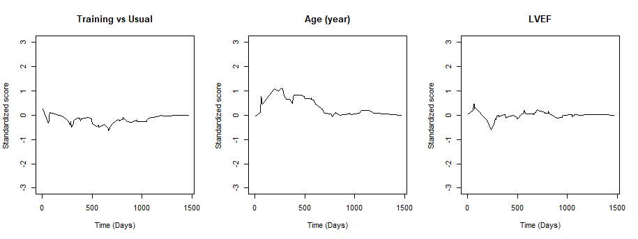

head(hfaction)
#> patid time status trt_ab age60
#> HFACT00001 0.60506502 1 0 1
#> HFACT00001 1.04859685 0 0 1
#> HFACT00002 0.06297057 1 0 1
#> HFACT00002 0.35865845 1 0 1
#> HFACT00002 0.39698836 1 0 1
#> HFACT00002 3.83299110 0 0 1
#> ...Applied Survival Analysis
Chapter 13 - Composite Endpoints
Outline
Traditional vs hierarchical composites
The restricted mean time in favor (RMT-IF) of treatment
Win ratio: two-sample analysis
Semiparametric regression of win ratio
\[\newcommand{\d}{{\rm d}}\] \[\newcommand{\T}{{\rm T}}\] \[\newcommand{\dd}{{\rm d}}\] \[\newcommand{\cc}{{\rm c}}\] \[\newcommand{\pr}{{\rm pr}}\] \[\newcommand{\var}{{\rm var}}\] \[\newcommand{\se}{{\rm se}}\] \[\newcommand{\indep}{\perp \!\!\! \perp}\] \[\newcommand{\Pn}{n^{-1}\sum_{i=1}^n}\] \[ \newcommand\mymathop[1]{\mathop{\operatorname{#1}}} \] \[ \newcommand{\Ut}{{n \choose 2}^{-1}\sum_{i<j}\sum} \]
$$
$$
Background & Rationale
The Composite Approach
- Complex outcomes
- Multivariate/Recurrent events
- (Semi-)Competing risks
- Longitudinal measures with survival endpoint
- Standard methods
- Joint models (frailty, random effects)
- Marginal models (component-wise robust methods, cumulative incidence)
- Traditional composite
- Time to first event (event-free survival)
Examples and Advantages
- Examples
- Cardiovascular: major adverse cardiovascular events (MACE), e.g., death, nonfatal heart failure, myocardial infarction, stroke, etc.
- Oncology: death and tumor progression (progression-free survival)
- Advantages
- More events \(\to\) higher power \(\to\) smaller sample size/lower costs
- No need for multiplicity adjustment
- A unified measure of treatment effect
- Recommended by ICH-E9 “Statistical Principles for Clinical Trials” (1998)
Data and Notation
- Time-to-event
- \(D\): survival time; \(N^*_D(t)=I(D\leq t)\)
- \(N^*_1(t), \ldots, N^*_K(t)\): counting processes for \(K\) nonfatal event types
- Life history: \(\mathcal H^*(t)=\{N^*_D(u), N^*_1(u), \ldots, N^*_K(u):0\leq u\leq t\}\)
- Multistate
- \(Y(t)=0, 1,\ldots, K,\infty\): multistate process; \(\infty=\)death
- Life history: \(\mathcal H^*(t)= \{Y(u):0\leq u\leq t\}\)
- Common features
- Death most important, followed by some other events/states
Traditional Composite Endpoints
- Time to first event
- \(N_{\rm TFE}(t) = I\{N^*_D(t)+\sum_{k=1}^KN^*_k(t)\geq 1\}= I\{Y(t)\geq 1\}\)
- Weighted composite event process
- \(N_{\rm R}(t)=w_DN^*_D(t)+\sum_{k=1}^Kw_kN^*_k(t)\)
- Hierarchical composite endpoints (HCE)
- Death > nonfatal MACE > minor symptoms > …
- Use more data, avoid arbitrary specification of weights
Motivating Examples
- Colon cancer trial
- Levamisole + fluorouracil (\(n=304\)) vs control (\(n=315\))
- Relapse-free survival
- 258 (89%) deaths ignored
- HF-ACTION trial
- Exercise training (\(n=205\)) vs usual care (\(n=221\))
- Hospitalization-free survival
- 82 (88%) deaths + 707 (69%) hospitalizations ignored
Hierarchical Composite Endpoints
- Restricted mean time in favor (RMT-IF)
- Nonparametric measure of effect size on HCE
- Net average time treatment gains in a more favorable state
- An extension of RMST
- Uses all events (hierarchically)
- Win ratio
- Ratio of probability of better / worse outcomes
- Initially two-sample comparison (Pocock et al., 2012)
- Extended to semiparametric regression
Restricted Mean Time in Favor
Outcome Data
- Target of inference
- Multistate outcomes \[Y(t) \in \{0, 1,\ldots, K, \infty\}\]
- \(0\): initial state (e.g., remission)
- \(1, \ldots, K\): a series of progressively worse states
- \(\infty\): death
- Examples
- \(1\): relapse; \(2\): metastasis
- \(1, 2, \ldots\): cumulative number of hospitalizations
- Two-sample comparison
- \(Y^{(a)}(t)\): a random patient in group \(a\) (\(a=1\): treatment; \(0\): control)
- Multistate outcomes \[Y(t) \in \{0, 1,\ldots, K, \infty\}\]
Time on a Win or Loss
- Pairwise win-loss time
- \(Y^{(1)}(t)\) vs \(Y^{(0)}(t)\) over \([0, \tau]\);
- \(\tau\): restiction time (e.g., 5 years)
- Win time \(=\) time residing in a lower-tiered (thus more favorable) state \[ W^{(a, 1-a)}(\tau)=\int_0^\tau I\{Y^{(a)}(t)<Y^{(1-a)}(t)\}{\rm d}t \]
- \(Y^{(1)}(t)\) vs \(Y^{(0)}(t)\) over \([0, \tau]\);

Net Average Win Time
- Restricted mean time in favor (RMT-IF) of treatment \[
\mu(\tau) = E\{W^{(1, 0)}(\tau)\} - E\{W^{(0, 1)}(\tau)\}
\]
- \(E\{W^{(1, 0)}(\tau)\}\): average win time by treatment vs control
- \(E\{W^{(0, 1)}(\tau)\}\): average loss time by treatment vs control
- \(\mu(\tau)\): net average win time by treatment vs control
- Reduces to difference in RMST in life-death model
- Decomposition: Time won on which component?
- Extra survival time + extra relapse-free time + …
Decomposition
- Stage-wise effects \[\mu(\tau) = \sum_{k=1}^{K,\infty} \mu_k(\tau)\]
- Time won on \(k\)th state (being in a better state) \[W_k^{(a, 1-a)}(\tau)=\int_0^\tau I\{Y^{(a)}(t)<Y^{(1-a)}(t) = k\}{\rm d}t\]
- Net average win time on state \(k\) \[
\mu_k(\tau)= E\{W_k^{(1, 0)}(\tau)\} - E\{W_k^{(0, 1)}(\tau)\}
\]
- \(\mu_\infty(\tau)\): net win time on survival \(=\) difference in \(\tau\)-RMST (regardless of other states)
- \(\mu_2(\tau)\): extra metastasis-free time; \(\mu_1(\tau)\): extra relapse-free time
Simplify for Progressive Processes
- Progressive process \[Y^{(a)}(t)\leq Y^{(a)}(s) \mbox{ for all } 0\leq t\leq s\]
- Transition time \(T_k^{(a)}\): time to transition to a state \(\geq k\)
- \(T_1^{(a)}\): time to relapse/metastasis/death
- \(T_2^{(a)}\): time to metastasis/death
- \(T_\infty^{(a)}=D^{(a)}\): time to death
- Reformulation: \[Y^{(a)}(\cdot)\equiv \big\{0\leq T_1^{(a)}\leq\cdots\leq T_K^{(a)}\leq T_\infty^{(a)}\big\}\]
- A progressive process \(\Longleftrightarrow\) a sequence of transition marks
- Transition time \(T_k^{(a)}\): time to transition to a state \(\geq k\)
Delve into Estimand
- Average win time on state \(k\)
- Re-expression with \(S_k^{(a)}(t)=P\{T_k^{(a)}> t\}\) \[\begin{align} E\{W_k^{(a, 1-a)}(\tau)\}&=E\left\{\int_0^\tau I\{Y^{(a)}(t)<Y^{(1-a)}(t) = k\}{\rm d}t\right\}\\ &=\int_0^\tau P\{Y^{(a)}(t)< k\}P\{Y^{(1-a)}(t) = k\}{\rm d}t\\ &=\int_0^\tau P\{T_k^{(a)}> t\}P\{T_k^{(1-a)}\leq t < T_{k+1}^{(1-a)}\}{\rm d}t\\ &=\int_0^\tau S_k^{(a)}(t)\left\{S_{k+1}^{(1-a)}(t) - S_k^{(1-a)}(t)\right\}{\rm d}t\\ \end{align}\]
- Net average win time \[\mu_k(\tau)=E\{W_k^{(1, 0)}(\tau)\}-E\{W_k^{(0, 1)}(\tau)\}= \int_0^\tau \left\{S_k^{(1)}(t)S_{k+1}^{(0)}(t) - S_k^{(0)}(t)S_{k+1}^{(1)}(t)\right\}{\rm d}t\]
Observed Data & Estimation
- Censored observations \[
(X_k^{(a)}, \delta_k^{(a)}),\,\,\, k =1,\ldots, K, \infty
\]
- \(X_k^{(a)}= \min(T_k^{(a)}, C^{(a)})\); \(\delta_k^{(a)}= I(T_k^{(a)}\leq C^{(a)})\); \(C^{(a)}=\)censoring time
- Kaplan–Meier estimator \(\hat S_k^{(a)}(t)\)
- Estimation: Plug-in KM estimator \[
\hat\mu_k(\tau)=
\int_0^\tau \left\{\hat S_k^{(1)}(t)\hat S_{k+1}^{(0)}(t) - \hat S_k^{(0)}(t)\hat S_{k+1}^{(1)}(t)\right\}{\rm d}t
\]
- Robust variance estimator
Hypothesis Testing
- Test of overall effect \[
H_0: \mu(\tau)= 0
\]
- \(\chi_1^2\) test based on \(\hat\mu(\tau)=\sum_{k=1}^{K,\infty}\hat\mu_k(\tau)\)
- Joint test on components \[
H_0: \mu_1(\tau)=\cdots=\mu_K(\tau)=\mu_\infty(\tau)
\]
- \(\chi_{K+1}^2\) test based on \(\hat\mu_1(\tau),\ldots,\hat\mu_K(\tau),\hat\mu_\infty(\tau)\)
- Or individual components for secondary analyses
- \(\chi_{K+1}^2\) test based on \(\hat\mu_1(\tau),\ldots,\hat\mu_K(\tau),\hat\mu_\infty(\tau)\)
Software: rmt::rmtfit() (I)
- Input data format (long)
- Standard multistate
status = kfor entry into state \(k\),K+1for death,0for censoring
- Recurrent events with death
status = 1for nonfatal event,2for death,0for censoring
- Standard multistate
Software: rmt::rmtfit() (II)
- Basic syntax
library(rmt)
# trt: binary treatment
obj <- rmtfit(id, time, status, trt,
type = c("multistate", "recurrent"))- Output: a list of class
rmtfitobj$t: \(t\);obj$mu: a matrix of \((K+2)\) rows, \(\hat\mu_k(t)\) in \(k\)th row, \(\hat\mu(t)\) in last;obj$var: variances of point estimates inmusummary(obj, tau)for summary results on \(\mu(\tau)\), including the \(\mu_k(\tau)\)- Recurrent events: specify
Kmax = kto merge \(\mu_{k+}(\tau)\sum_{k'=k}^K=\mu_{k'}(\tau)\)
- Recurrent events: specify
plot(obj)to plot \(\hat\mu(t)\) against \(t\)
Example: HF-ACTION
- Exercise training vs usual care
── Attaching core tidyverse packages ──────────────────────── tidyverse 2.0.0 ──
✔ dplyr 1.1.4 ✔ readr 2.1.5
✔ forcats 1.0.0 ✔ stringr 1.5.1
✔ ggplot2 3.5.1 ✔ tibble 3.2.1
✔ lubridate 1.9.3 ✔ tidyr 1.3.1
✔ purrr 1.0.2
── Conflicts ────────────────────────────────────────── tidyverse_conflicts() ──
✖ dplyr::filter() masks stats::filter()
✖ dplyr::lag() masks stats::lag()
✖ lubridate::ms() masks rmt::ms()
ℹ Use the conflicted package (<http://conflicted.r-lib.org/>) to force all conflicts to become errors| Usual care (N = 221) | Exercise training (N = 205) | ||
|---|---|---|---|
| Age | ≤ 60 years | 122 (55.2%) | 128 (62.4%) |
| > 60 years | 99 (44.8%) | 77 (37.6%) | |
| Follow-up | (months) | 28.6 (18.4, 39.3) | 27.6 (19, 40.2) |
| Death | 57 (25.8%) | 36 (17.6%) | |
| Hospitalizations | 0 | 51 (23.1%) | 60 (29.3%) |
| 1-3 | 114 (51.6%) | 102 (49.8%) | |
| 4-10 | 49 (22.2%) | 39 (19%) | |
| >10 | 7 (3.2%) | 4 (2%) |
Standard Analyses
- Traditional composite and overall survival 
R-Code
library(rmt)
head(hfaction)
#> patid time status trt_ab age60
#> HFACT00001 0.60506502 1 0 1
#> HFACT00001 1.04859685 0 0 1
#> ...# fit RMT-IF
obj <- rmtfit(hfaction$patid, hfaction$time, hfaction$status, hfaction$trt,
type = "recurrent")
summary(obj, Kmax=4, tau=3.97) ## combined recurrent events >= 4
# Restricted mean time in favor of group "1" by time tau = 3.97:
# Estimate Std.Err Z value Pr(>|z|)
# Event 1 0.0140515 0.0498836 0.2817 0.778184
# Event 2 0.0358028 0.0499618 0.7166 0.473619
# Event 3 0.1385287 0.0409533 3.3826 0.000718 ***
# Event 4+ -0.0064731 0.0600813 -0.1077 0.914203
# Survival 0.2384169 0.1143484 2.0850 0.037069 *
# Overall 0.4203268 0.1777363 2.3649 0.018035 * Graphics
\(\hat\mu(t)\) as a function of \(t\)
- Overall RMT-IF becomes significant after 1 year (see lower CL)
plot(obj, conf = TRUE, conf.col = "gray", lwd = 2, xlab = "t (years)", ylab = "expression(mu(t))", main = "")

Inference Results
- 4-year RMT-IF of exercise training
Training on average gains 5.1 months (\(P\)=0.018) in favorable state
- 2.9 months net survival \(+\) 2.2 months net time with fewer hospitalizations (little effect on 1st)
| Estimate | SE | P-value | ||
|---|---|---|---|---|
| Hopitalization | 2.18 | 1.22 | 0.073 | |
| 1 | 0.17 | 0.60 | 0.778 | |
| 2 | 0.43 | 0.60 | 0.474 | |
| 3 | 1.66 | 0.49 | <0.001 | |
| 4+ | -0.08 | 0.72 | 0.914 | |
| Death | 2.86 | 1.37 | 0.037 | |
| Overall | 5.04 | 2.13 | 0.018 |
Win Ratio Basics
Standard Two-Sample
- Two-sample comparison (Pocock et al., 2012)
- Data: \(D_i^{(a)}, T_i^{(a)}, C_i^{(a)}\): survival, hospitalization, censoring times on \(i\)th subject in group \(a\) \((i=1,\ldots, N_a; a= 1, 0)\)
- Hierarchical composite: Death > hospitalization
- Pairwise comparisons \[\begin{align} \hat w^{(a, 1-a)}_{ij}&= \underbrace{I(D_j^{(1-a)}< D_i^{(a)}\wedge C_i^{(a)}\wedge C_j^{(1-a)})}_{\mbox{win on survival}}\\ & + \underbrace{I(\min(D_i^{(a)}, D_j^{(1-a)}) > C_i^{(a)}\wedge C_j^{(1-a)}, T_j^{(1-a)}< T_i^{(a)}\wedge C_i^{(1)}\wedge C_j^{(0)})}_{\mbox{inconclusive on survival, win on hospitalization}} \end{align}\]
- Prioritized comparison on \(\left[0, C_i^{(a)}\wedge C_j^{(1-a)}\right]\)
Pocock’s Rule
- Win, lose, or tie?

Calculation of Win Ratio
- Two-sample statistics
- Win (loss) fraction for group \(a\) (\(1-a\)) \[ \hat w^{(a, 1-a)}=(N_0N_1)^{-1}\sum_{i=1}^{N_a}\sum_{j=1}^{N_{1-a}}\hat w^{(a, 1-a)}_{ij}\]
- Win ratio statistic \[ WR = \hat w^{(1, 0)} / \hat w^{(0, 1)} \]
- Other measures
- Net benefit (proportion in favor): \(\hat w^{(1, 0)} - \hat w^{(0, 1)}\)
- Win odds: \((\hat w^{(1, 0)} - \hat w^{(0, 1)} + 1)/ (\hat w^{(0, 1)} - \hat w^{(1, 0)} + 1)\)
The Binary Case
- Consider binary \(Y^{(a)}= 1, 0\)
- \(\hat w^{(a, 1-a)}_{ij} = I(Y_i^{(a)}> Y_j^{(1-a)})=Y_i^{(a)}(1-Y_j^{(1-a)})\)
- Win (loss) fraction \[ \hat w^{(a, 1-a)} = (N_1N_0)^{-1}\sum_{i=1}^{N_a}\sum_{j=1}^{N_{1-a}}Y_i^{(a)}(1-Y_j^{(1-a)}) = \hat p^{(a)}(1-\hat p^{(1-a)})\] where \(\hat p^{(a)}= N_a^{-1}\sum_{i=1}^{N_a} Y_i^{(a)}\)
- Equivalencies \[\begin{align} {\rm Win\,\, ratio}&= \frac{\hat w^{(1, 0)}}{\hat w^{(0, 1)}} = \frac{\hat p^{(1)}(1-\hat p^{(0)})}{\hat p^{(0)}(1-\hat p^{(1)})} = {\rm Odds \,\, ratio}\\ {\rm Net \,\, benefit}&=\hat w^{(1, 0)} - \hat w^{(0, 1)} = \hat p^{(1)}- \hat p^{(0)}= {\rm Risk \,\, difference} \end{align}\]
General Data
- Outcome data \[\mathcal H^{*{(a)}}(t)=\left\{N^{*{(a)}}_D(u), N^{*{(a)}}_1(u), \ldots, N^{*{(a)}}_K(u):0\leq u\leq t\right\}\]
- \(N^{*{(a)}}_D(u), N^{*{(a)}}_1(u), \ldots, N^{*{(a)}}_K(u)\): counting processes for death and \(K\) different types of nonfatal events
- Observed data \[\{\mathcal H^{*{(a)}}(X^{(a)}), X^{(a)}\}\]
- Life history observed up to \(X^{(a)}= D^{(a)}\wedge C^{(a)}\)
General Rule
- Win function \[\mathcal W(\mathcal H^{*{(a)}}, \mathcal H^{*{(1-a)}})(t) =I\left\{\mathcal H^{*{(a)}}(t) \mbox{ is more favorable than } \mathcal H^{*{(1-a)}}(t)\right\}\]
- Basic requirements
- (W1) \(\mathcal W(\mathcal H^{*{(a)}}, \mathcal H^{*{(1-a)}})(t)\) is a function only of \(\mathcal H^{*{(a)}}(t)\) and \(\mathcal H^{*{(1-a)}}(t)\)
- (W2) \(\mathcal W(\mathcal H^{*{(a)}}, \mathcal H^{*{(1-a)}})(t)+\mathcal W(\mathcal H^{*{(1-a)}}, \mathcal H^{*{(a)}})(t) \in \{0, 1\}\)
- (W3) \(\mathcal W(\mathcal H^{*{(a)}}, \mathcal H^{*{(1-a)}})(t)=\mathcal W(\mathcal H^{*{(a)}}, \mathcal H^{*{(1-a)}})(D^{(a)}\wedge D^{(1-a)}\wedge t)\)
- Interpretations
- (W1) Consistency of time frame
- (W2) Either win, loss, or tie
- (W3) No change of win-loss status after death (satisfied if death is prioritized)
- Basic requirements
Generalized Win Ratio
- General WR statistics \[\begin{equation}\label{eq:wr:gen_WR}
\hat{\mathcal E}_n(\mathcal W)=\frac{(N_1N_0)^{-1}\sum_{i=1}^{N_1}\sum_{j=1}^{N_0}\mathcal W(\mathcal H^{*{(1)}}_{i}, \mathcal H^{*{(0)}}_{j})(X^{{(1)}}_{i}\wedge X^{{(0)}}_{j})}
{(N_1N_0)^{-1}\sum_{i=1}^{N_1}\sum_{j=1}^{N_0}\mathcal W(\mathcal H^{*{(0)}}_{j}, \mathcal H^{*{(1)}}_{i})(X^{{(1)}}_{i}\wedge X^{{(0)}}_{j})}
\end{equation}\]
- Window of comparison: \([0, X^{{(1)}}_{i}\wedge X^{{(0)}}_{j}]\), by a general \(\mathcal W\)
- Stratified win ratio \[ \frac{\text{Weighted sum of within-stratum wins}}{\text{Weighted sum of within-stratum losses}} \]
Pocock’s Win Ratio
- Win function
- \(K\) nonfatal events hierarchically ranked
- \(T^{(a)}_k\): time of first event in \(N_k^{*{(a)}}(t)\) \((k=1,\ldots, K)\) \[\begin{align}\label{eq:wr:PWR}
\mathcal W_{\rm P}(\mathcal H^{*{(a)}}, \mathcal H^{*{(1-a)}})(t)&=I\{D^{(1-a)}<D^{(a)}\wedge t\}\notag\\
&\hspace{2mm}+I\{D^{(a)}\wedge D^{(1-a)}>t, T_{1}^{(1-a)}<T_{1}^{(a)}\wedge t\}\notag\\
&\hspace{2mm}+\sum_{k=2}^KI\{\tilde T_{k-1}^{(a)}\wedge \tilde T_{k-1}^{(1-a)}>t, T_{k}^{(1-a)}<T_{k}^{(a)}\wedge t\}
\end{align}\]
- \(\tilde T_{k-1}^{(a)}=D^{(a)}\wedge T_{1}^{(a)}\wedge\cdots\wedge T_{k-1}^{(a)}\)
- Win ratio statistic: \(\hat{\mathcal E}_n(\mathcal W_{\rm P})\)
Taking Recurrent Events
- Recurrent-event win ratio (RWR)
- Death > number of recurrent events > time to last event

Time-to-First-Event
- Compare on order of first event
- Win function \[
\mathcal W_{\rm TFE}(\mathcal H^{*{(a)}},\mathcal H^{*{(1-a)}})(t)=I(\tilde T^{(1-a)}<\tilde T^{(a)}\wedge t)
\]
- \(\tilde T^{(a)}=\min(D^{(a)}, T_1^{(a)},\ldots, T_K^{(a)})\)
- Allowable but not desirable
- Win function \[
\mathcal W_{\rm TFE}(\mathcal H^{*{(a)}},\mathcal H^{*{(1-a)}})(t)=I(\tilde T^{(1-a)}<\tilde T^{(a)}\wedge t)
\]
Semiparametric Regression of Win Ratio
Regression Framework
- Motivation
- Meaningful estimand of effect size
- Multiple (quantitative) predictors
- Modelin target
- Two independent subjects \((\mathcal H_i, Z_i)\) and \((\mathcal H_j, Z_j)\)
- \(E\{\mathcal W(\mathcal H_i,\mathcal H_j)(t)\mid Z_i, Z_j\}\): Conditional win fraction (probability) for \(i\) against \(j\) at \(t\)
- \(E\{\mathcal W(\mathcal H_j,\mathcal H_i)(t)\mid Z_i, Z_j\}\): Conditional win fraction (probability) for \(j\) against \(i\) at \(t\)
- Covariate-specific win ratio \[\begin{equation}\label{eq:cov_spec_curtail_wr} WR(t; Z_i, Z_j;\mathcal W):= \frac{E\{\mathcal W(\mathcal H_i,\mathcal H_j)(t)\mid Z_i,Z_j\}}{E\{\mathcal W(\mathcal H_j,\mathcal H_i)(t)\mid Z_i, Z_j\}} \end{equation}\]
- Model it against \(Z_i\) and \(Z_j\) to study covariate effect on WR
- Two independent subjects \((\mathcal H_i, Z_i)\) and \((\mathcal H_j, Z_j)\)
Model Specification
- Proportional win-fractions (PW) model \[\begin{equation}\label{eq:wr_reg}
WR(t\mid Z_i, Z_j;\mathcal W)=\exp\left\{\beta^{\rm T}\left(Z_i- Z_j\right)\right\}
\end{equation}\]
- PW: covariate-specific win/loss fractions proportional over time
- WR constant over time
- \(\beta\): log-win ratio associated with unit increases in covariates (regardless of follow-up time)
- Semiparametric model
- Parametric covariate-specific WRs
- Nonparametric in other aspects (baseline event rates, etc.)
- Denote model by PW\((\mathcal W)\)
- Stresses model’s dependency on \(\mathcal W\) chosen
- PW: covariate-specific win/loss fractions proportional over time
Special Cases
- Pocock’s two-sample WR
- \(Z = 1, 0\)
- \(\exp(\beta)\): WR comparing group \(z=1\) with group \(0\)
- Cox PH model
- PW\((\mathcal W_{\rm TFE})\) \(\Leftrightarrow\) Cox PH model on time to first event
Estimation
- Construction of estimating function
- Observed win process \(\delta_{ij}(t)=\mathcal W(\mathcal H_i,\mathcal H_j)(X_i\wedge X_j\wedge t)\)
- Determinancy (win or loss): \(R_{ij}(t)=\delta_{ij}(t)+\delta_{ji}(t)\)
- Mean-zero residual \[\begin{equation}\label{eq:wr:resid} M_{ij}(t\mid Z_i, Z_j;\beta)=\underbrace{\delta_{ij}(t)}_{\rm observed\,\,win} - \underbrace{R_{ij}(t)\frac{\exp\left\{\beta^{\rm T}\left( Z_i- Z_j\right)\right\}}{ 1+\exp\left\{\beta^{\rm T}\left(Z_i- Z_j\right)\right\}}}_{\rm model-based\,\, prediction} \end{equation}\]
- Estimating equation \[\begin{equation}\label{eq:wr:ee}
\Ut\int_0^\infty (Z_i - Z_j) h(t; Z_i, Z_j)\dd M_{ij}(t \mid Z_i, Z_j;\beta)=0
\end{equation}\]
- Weight function \(h(t; Z_i, Z_j)\equiv 1\)
Checking Proportionality
- Cumulative residuals
- Rescaled \(\hat U_n(t)=\Ut(Z_i - Z_j)\underbrace{M_{ij}(t \mid Z_i, Z_j;\hat\beta)}_{\rm observed\,\, minus\,\, model-based\,\,wins\,\, by\,\, t}\)

Software: WR::pwreg() (I)
- Input data format
status = 1for death,2for nonfatal events,0for censoring
library(WR)
#> Loading required package: survival
head(non_ischemic)
#> ID time status trt_ab age sex Black.vs.White Other.vs.White bmi
#> 1 1 221 2 0 62 1 0 0 25.18
#> 2 1 383 0 0 62 1 0 0 25.18
#> 3 2 23 2 0 75 1 1 0 22.96
#> 4 2 1400 0 0 75 1 1 0 22.96
#> ...Software: WR::pwreg() (II)
- Basic syntax for PW\((\mathcal W_{\rm P})\)
ID: subject identifierZ: covariate matrix;strata: possible stratifier (categorical)
# fit PW model (death > nonfatal event)
obj <- pwreg(ID, time, status, Z, strata = NULL)- Output: an object of class
pwregobj$beta: \(\hat\beta\)obj$Var: \(\hat\var(\hat\beta)\)print(obj)to summarize regression results
Software: WR::score.proc()
- Checking proportionality
obj: apwregobject
# fit PW model (death > nonfatal event)
score.obj <- score.proc(obj)- Output: an object of class
score.procscore.obj$t: \(t\)score.obj$score: a matrix with rescaled residual process for each covariate per rowplot(score.obj, k): plot the rescaled residuals for \(k\)th covariate
HF-ACTION: Data
- Another subset of HF-ACTION
- Population: \(n=451\) non-ischemic patients followed over median length of 31.6 months
- Endpoints: death > first hospitalization
- Predictors: training vs usual care, age, sex, race, bmi, LVEF, medications, etc.
library(WR)
#> Loading required package: survival
head(non_ischemic)
#> ID time status trt_ab age sex Black.vs.White Other.vs.White bmi ...
#> 1 1 221 2 0 62 1 0 0 25.18
#> 2 1 383 0 0 62 1 0 0 25.18
#> 3 2 23 2 0 75 1 1 0 22.96
#> 4 2 1400 0 0 75 1 1 0 22.96
#> ...HF-ACTION: Regression Coding
- Set up PW\((\mathcal W_{\rm P})\)
# extract variables and covariate matrix
ID <- non_ischemic[,"ID"]
time <- non_ischemic[,"time"]
status <- non_ischemic[,"status"]
Z <- as.matrix(non_ischemic[, 4:(3+p)], nr, p)
# pass the parameters into the function
pwreg.obj <- pwreg(ID, time, status, Z)
# print out results
print(pwreg.obj)HF-ACTION: Regression Results
- Summary results
- Training \(\exp(0.191) - 1= 21\%\) more likely to get favorable outcome than UC
- Race differences substantial and significant
- LVEF: 1% increases win likelihood by \(\exp(0.021) = 1.02\) (\(p\)-value 0.013)
#> Estimates for Regression parameters:
#> Estimate se z.value p.value
#> Training vs Usual 0.1906687 0.1264658 1.5077 0.13164
#> Age (year) -0.0128306 0.0057285 -2.2398 0.02510 *
#> Male vs Female -0.1552923 0.1294198 -1.1999 0.23017
#> Black vs White -0.3026335 0.1461330 -2.0709 0.03836 *
#> Other vs White -0.3565390 0.3424360 -1.0412 0.29779
#> BMI -0.0181310 0.0097582 -1.8580 0.06316 .
#> LVEF 0.0214905 0.0086449 2.4859 0.01292 *
#> ...HF-ACTION: Residual Analyses
- Checking proportionality
score.obj <- score.proc(pwreg.obj)
par(mfrow = c(1, 3)) # plot residual processes for treatment, age, LVEF
for(i in c(1, 2, 7)){
plot(score.obj, k = i, xlab = "Time (Days)")
}
Conclusion
Notes
- Before win ratio
- Continuous outcome: Wilcoxon (1945), Mann & Whitney (1947)
- Hierarchical endpoints: Finkelstein and Schoenfeld (1999), Buyse (2010)
- More on RMT-IF
- Mao (2023, Biometrics)
- Hierarchical endpoints
- Gaining popularity and an active area of research
Summary
- RMT-IF
- Model-free, component-wise decomposable \[ \mu(\tau) = \underbrace{E\{W^{(1, 0)}(\tau)\}}_{\rm win\,time\,by\,\tau} - \underbrace{E\{W^{(0, 1)}(\tau)\}}_{\rm loss\,time\,by\,\tau} \]
rmt::rmtfit()
- Win ratio regression
- Proportionality and multiplicativity \[ WR(t\mid Z_i, Z_j;\mathcal W)=\exp\left\{\beta^{\rm T}\left(Z_i- Z_j\right)\right\} \]
- \(\exp(\beta)\): WRs with unit increases in covariates
WR::pwreg()